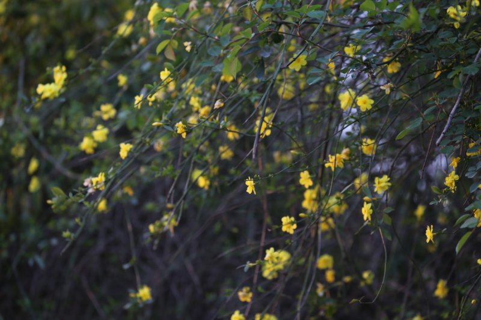
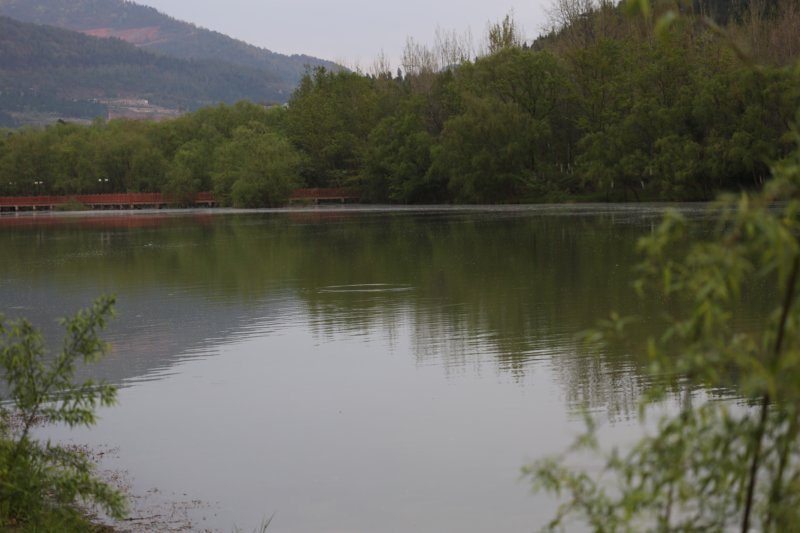
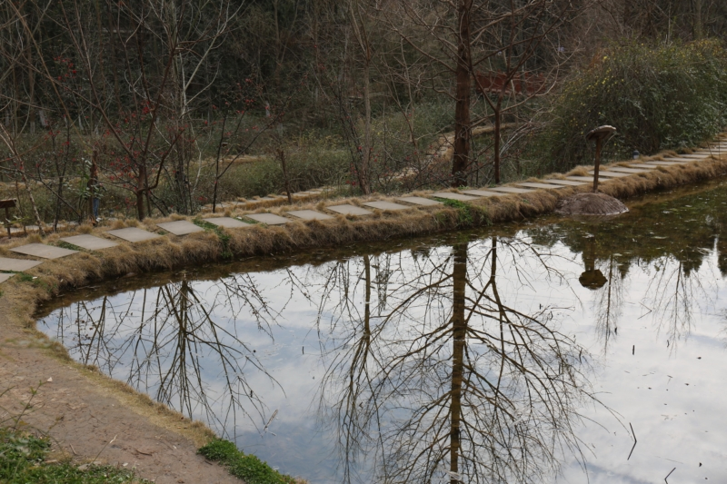
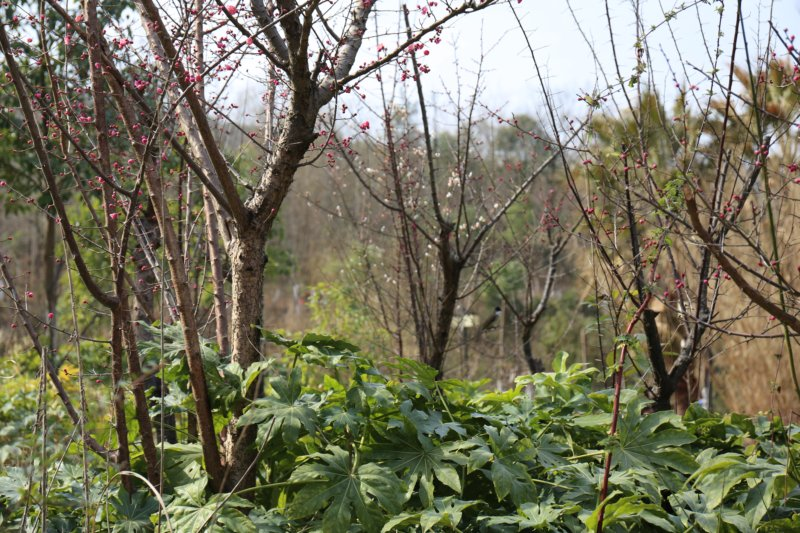
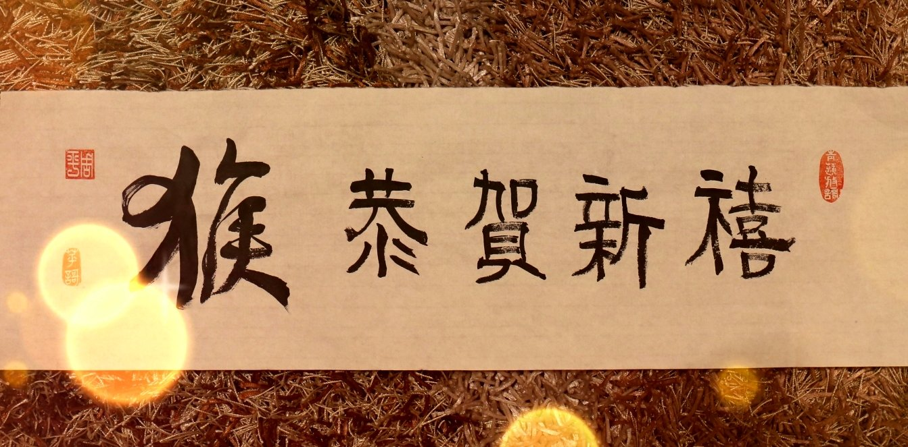
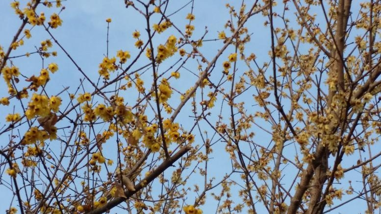
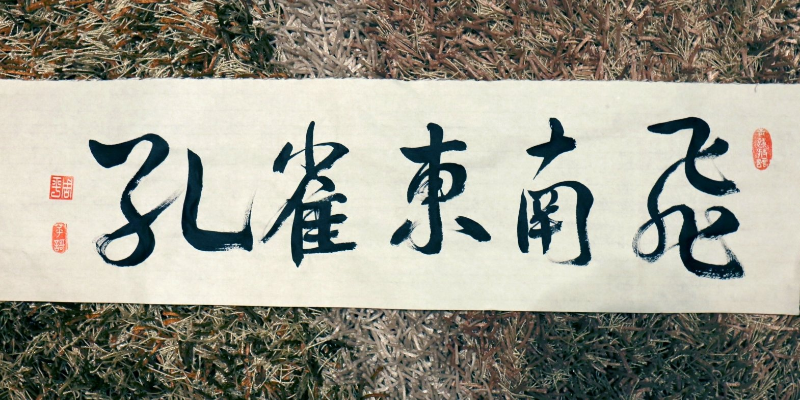
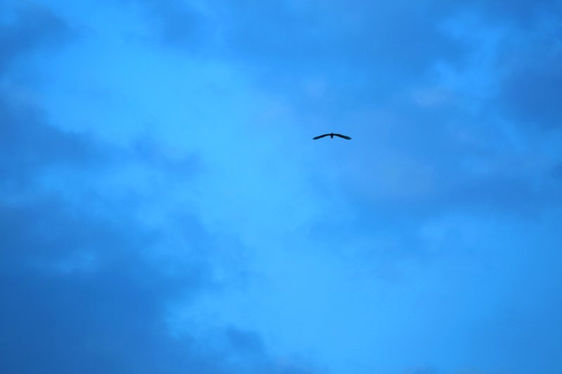

苹 謌风起于青苹之末， 狂来放謌自谴乐。
三月春色
2016-03-03
乍暖还寒三月里，迎春花开花蔓茎。
踏青湿地万源行，生态氧吧天然景。
漫漫廊道犹芳馨，轻风习习拂面清。
鸣鸟声声闹春晓，水映山色成双影。
2016.03.03 三月初的春天，珊珊迟来广元。暖冬寒春, 气温频变，忽冷忽热的。迎春花开，春气阳然。白天风和日 丽，微风轻轻吹过脸颊，暖暖的，却又有些凉意，顿觉阵阵 清爽。在依南山傍南河的湿地公园及廊道漫步，尽享生态水 景，闻鸟语花香，吸天然氧吧。恰是踏青游春时喔。


十六登山游
2016-02-23
正月十六爬南山，
游走百病体强健。
遥望星空对影看，
十五月亮十六圆。
（2016.02.23 广元湿地公园南山“正月十六游百病”）


情人节快乐
2016-02-14
正月倒春寒，
又见雨雪天。
玫瑰花一束，
单身狗见欢。
【注释】单身狗：网络俚语，特指没有结婚的单身人。
新春万福
2016-02-07
春风送暖万物苏，
百鸟欢唱杨柳舞。
羊辞猴来喜添岁，
苹謌拜年送祝福！

除 夕
2016-02-07
除夕年三十， 一元亦复始。
春气万象新， 爆竹喜庆吉。
家家聚团圆， 福禄多美满。
守岁不眠夜， 叙旧话新年。
腊梅傲寒
2016-01-23
寒潮袭来雨雪飘，
阵阵北风呜呜啸。
风卷枯叶凛年关，
四九腊梅滿枝傲。
（2016.01.23 大风吹的“呼呼”响，广元的风却是“呜呜”的叫声）

孔雀颂
2016-01-07
百鸟之王欢，屏开舞斑斓。
化影东南飞，情愫古今传。

大气之福
2016-01-02
拥坦荡之心，
养浩然之气。
立天地之间，
成大器之概。
（2016.1.2 读《大气之人,必有大福气!》）
辞旧迎新
2016-01-01
匆匆 2015 去， 过往忆心底。
茫茫 2016 里， 万事兴如意。
赏《鸿雁》曲之随想
2015-12-01
听鸿雁，琴声颤，
余音悠扬绕梁环。
向南望，影去远，
遥想过往北风寒。
对酒当歌忧万千，
一曲思念荡心田。
2015.12.01.赏《小提琴版<鸿雁>,美得难以置信》 之随想。百听不厌, 醉了……

页数 2 / 5